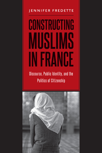

<body bgcolor="#FFFFFF" text="#000000" link="#0000FF" vlink="#CC0000" alink="#CC0000"><center><hr width="350" size="1" align="center" noshade>A groundbreaking study that presents Muslims in France as a diverse social group rather than a monolithic religious group<hr width="350" size="1" align="center" noshade><p><a href="https://cdcshoppingcart.uchicago.edu/Cart/ChicagoBook.aspx?ISBN=9781439910283&&PRESS=temple" target="_top">Buy this book!</a> | <a href="https://cdcshoppingcart.uchicago.edu/Cart/Cart.aspx?PRESS=temple" target="_top">View Cart</a> | <a href="https://cdcshoppingcart.uchicago.edu/Cart/Cart.aspx?PRESS=temple" target="_top">Check Out</a></p><p></p></center><!--none//--><h1>Constructing Muslims in France</h1>
<H2>Discourse, Public Identity, and the Politics of Citizenship</H2>
<h3>Jennifer Fredette</h3>
<P>cloth 1-4399-1028-6 $90.50, Feb 14, <FONT COLOR=#990033>Available</FONT>
<br>paper 1-4399-1029-4 $30.95, Jan 14, <FONT COLOR=#990033>Available</FONT>
<br>Electronic Book 1-4399-1030-8 $29.95 <FONT COLOR=#990033>Available</FONT>
<BR> 228 pp
6x9
3&nbsp;tables 4&nbsp;figures 9&nbsp;halftones
</P><BLOCKQUOTE><I>"In this must read on France�s �Muslim question,� Fredette successfully covers broad issues from identity to citizenship, from education to employment. The analysis of paradoxical French policies adopted to integrate Muslims and Muslims� dynamic responses is fascinating. </I>Constructing Muslims in France<I> offers an engaging discursive analysis based on in-depth ethnographic data."</I>
<br>&#151<b>Ahmet T. Kuru</b>, Associate Professor of Political Science at San Diego State University and author of <I>Secularism and State Policies toward Religion: The United States, France, and Turkey</I><I></I></BLOCKQUOTE>
<P>The standing of French Muslims is undercut by a predominant and persistent elite public discourse that frames Muslims as failed and incomplete French citizens. This situation fosters the very separations, exclusions, and hierarchies it claims to deplore as Muslims face discrimination in education, housing, and employment.
<P>In <I>Constructing Muslims in France</i>, Jennifer Fredette provides a deft empirical analysis to show the political diversity and complicated identity politics of this relatively new population. She examines the public identity of French Muslims and evaluates images in popular media to show how stereotyped notions of racial and religious differences pervade French public discourse. While rights may be a <i>sine qua non</i> for fighting legal and political inequality, Fredette shows that additional tools such as media access are needed to combat social inequality, particularly when it comes in the form of unfavorable discursive frames and public disrespect.
<P>Presenting the conflicting views of French national identity, Fredette shows how Muslims strive to gain recognition of their diverse views and backgrounds and find full equality as French citizens.
<BR>&nbsp;<h2>Excerpt</h2><P>Excerpt available at <a href="http://www.temple.edu/tempress">www.temple.edu/tempress</a></p>
<BR>&nbsp;<h2>Reviews</h2>
<p><I>"Fredette�s book is a masterful contribution to the scholarship on Muslims and the incorporation of ethnic and religious minorities in France. She does a remarkable job of explaining the intertwined relationships among the politicians, the media, and French intellectuals and the differences in how the French and U.S. educational systems operate. </I>Constructing Muslims in France<I> enhances the literature by elucidating contradictions and revealing how Muslims respond to discrimination in education, hiring, and housing and how they interpret and react to the way they are depicted in prevailing elite discourses."</I> <br>&#151<b>Caitlin Killian</b> Associate Professor of Sociology at Drew University and author of <I>North African Women in France: Gender, Culture, and Identity </I>
<p><I>"Bravo to Jennifer Fredette for her rich and engaging analysis that supports convincingly the central arguments about Muslim diversity, elite resistance, and French citizenship. Her interpretivist approach to how elite and public discourses shape perceptions and the social construction of Muslim identity is excellent, and her writing is highly accessible, with many useful examples. </I>Constructing Muslims in France<I> makes a very important contribution to citizenship studies, public law, feminist studies, and comparative politics."</I> <br>&#151<b>Amy Mazur</b> Professor in the Department of Political Science at Washington State University and coauthor (with Dorothy McBride) of <I>The Politics of State Feminism: Innovation in Comparative Research</I> (Temple)
<p><i>"Can Muslims in France be French? Fredette poses this question in the context of the French notion of civic nationhood and the doctrine of an abstract egalitarian republicanism that makes no ethnic, religious, or racial distinctions and is uncomfortable with multiculturalism. This book is not about 'constructing' Muslims but about the challenges of an increasingly diverse Islam.... Summing Up: Recommended."</i><br>&#151<b><i>Choice</i></b>
<p><i>"[A]n important contribution to scholarship on French Muslims and contemporary French citizenship.... [A] nuanced picture of contemporary discourses constructing French Muslims and an engaging analysis of the difficulties that these individuals face in different spheres of public life.... </i>Constructing Muslims in France<i> is very convincing, easily accessible, and thoroughly enjoyable. It is full of empirical examples that bring the French context alive for readers across the globe. This book will be of great interest to political scientists, sociologists, and legal scholars alike, as well as to anyone interested in issues of minority rights and discrimination."</i> <br>&#151<b><i>Reviews & Critical Commentary</i></b>
<p><i>"This is an intriguing book on a topic of great current importance�. Fredette is posing a crucial set of questions about Muslim communities, and she offers a scholarly series of answers to them at a time when this undertaking is more important than ever as unrest is transformed into violence and acts of terror.� It is in terms of the relevance of political theory to differing constructions of Muslims that Fredette takes the reader on an insightful and valuable exploration.... And it is in resting her case in terms that the French tradition privileges�the virtues of civic republicanism�that </i>Constructing Muslims in France<i> is at its most authoritative and illuminating."</i> <br>&#151<b><i>Perspectives on Politics</i></b>
<BR>&nbsp;<h2>Contents</h2><P>
<p>Acknowledgments
<br>
<br>Abbreviations
<br>
<br>1. Introduction: Why Do We Ask Whether Muslims Can Be French?
<br>2. Elusive Citizenship: The Consequences of an Undesirable Public Identity
<br>3. Claiming Membership: French Muslim Identities, Political Goals, and Repertoires of Contention
<br>4. Education: The (Undelivered?) Promise of Republican Equality
<br>5. Employment: The Muslim Experience in (and out of) the Workplace
<br>6. Housing: The Banlieues as a Geographic and Socially Constructed Place
<br>7. The Contentious Concept of Frenchness: French Muslims Embracing, Reimagining, but Not Rejecting the Republican Triad
<br>
<br>Appendix: Sample Questionnaire
<br>
<br>Notes
<br>References
<br>Index
</P><BR>&nbsp;<H2>About the Author(s)</H2>
<P><b>Jennifer Fredette</b> is Professor of Public Law at North Central College in Naperville, Illinois. She is the translator of Sylvain Brouard and Vincent Tiberj's <i><a href="2103_reg.html" target="_top">As French As Everyone Else? A Survey of French Citizens of Maghrebin, African, and Turkish Origin</a></i> (Temple).</P>
<BR><H2>Subject Categories</H2>
<p><A HREF="/tempress/political.html" TARGET="_top">Political Science and Public Policy</a>
<BR><A HREF="/tempress/race.html" TARGET="_top">Race and Ethnicity</a>
<BR><A HREF="/tempress/immigration.html" TARGET="_top">Immigration Studies</a>
</p>
<p align="center"><a href="https://cdcshoppingcart.uchicago.edu/Cart/ChicagoBook.aspx?ISBN=9781439910283&&PRESS=temple" target="_top">Buy this book!</a> | <a href="https://cdcshoppingcart.uchicago.edu/Cart/Cart.aspx?PRESS=temple" target="_top">View Cart</a> | <a href="https://cdcshoppingcart.uchicago.edu/Cart/Cart.aspx?PRESS=temple" target="_top">Check Out</a></p><p><font face="Arial" size="1"><a href="copyright.html" onMouseOver="window.status='Web Copyright Policy';return true;" onMouseOut="window.status=''" title="Web Copyright Policy">&copy;</a> 2015 <a href="http://www.temple.edu" target="new" onMouseOver="window.status='Link to Temple University home page';return true;" onMouseOut="window.status=''" title="Link to Temple University home page">Temple University</a>. All Rights Reserved. http://www.temple.edu/tempress/titles/2272_reg.html</font></p>